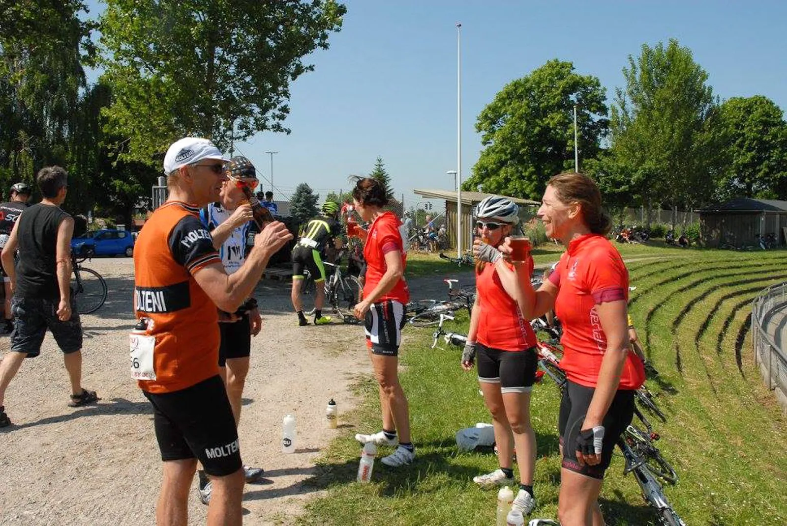

Løbsberetning: Aarhus Rundt 2016

I bagende solskin var Molteni klar til Aarhus rundt med holdets bjergklatrer Eigil, som trillede ud på de bakkede 129 km. med selvtilliden i top.
Holdets torta mama, Maria, skulle også køre løbet med et par holdkammerater fra KDC-Kvinderdercykler, og fulgte Eigil til start, så han ikke farede vild.

Selvtilliden fik Eigil dog hurtigt afløst af en heftig vejrtrækning, da de stærke Aarhusianske motionshold satte tempo i fronten af feltet. Eigil hang på, men måtte slippe ret hurtigt, og kørte 10 kilometer solo, før han begyndte at få selskab af andre ryttere, der var blevet sat.
De fandt ind i et godt tempo, og Eigil prøvede at splitte det lidt på bakkerne, men uden held. Han kørte igennem de 1500 højdemeter og fik en hæderlig placering midt i det 150 mand store felt.
Bagefter var der øl og pølser samt godt selskab med resten af KDC-Kvinderdercykler-holdet i målområdet